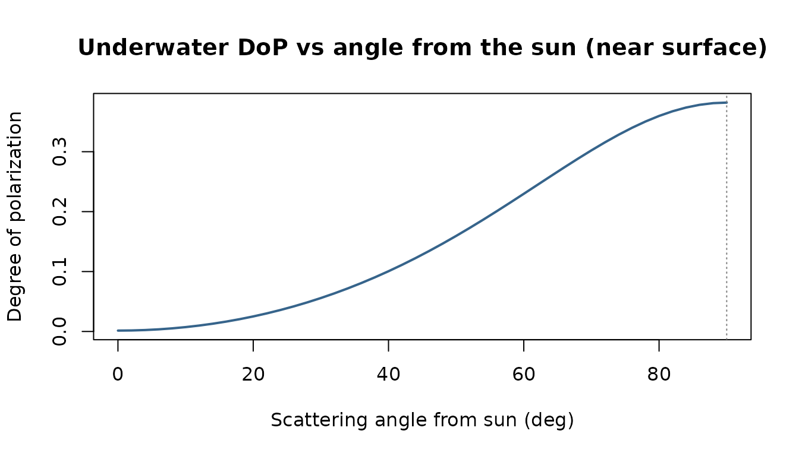
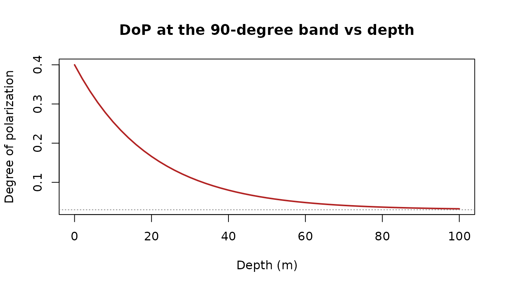

Sunlight scattered by water becomes partially linearly polarized, and many aquatic animals — cephalopods, stomatopods, many crustaceans and some fish — see that polarization and use it for navigation, contrast enhancement, and communication. luxR provides a tunable, Rayleigh-like single-scattering approximation to the underwater polarization field: enough to build intuition and explore geometry, but not a vector radiative-transfer solution.
Model status:
underwater_polarization()is an uncalibrated approximation, not a quantitative prediction. Its result carries aluxR.polarizationattribute recording that status and the exact parameter values. Quantitative use requires calibration for the relevant wavelength, water type, surface state, depth, and viewing geometry.
The model
For singly (Rayleigh-like) scattered light, the degree of polarization (DoP) depends on the scattering angle between the line of sight and the refracted solar beam,
peaking at and vanishing toward the sun and anti-sun. With depth, multiple scattering randomizes the field, so DoP relaxes toward an asymptotic floor. The sun’s beam is refracted at the surface into Snell’s window first:
refracted_solar_angle(c(0, 30, 60, 90)) # in-water solar zenith (deg)## [1] 0.00000 22.03011 40.51759 48.60663Degree of polarization across the sky
With the sun overhead, polarization is strongest when looking horizontally (90° from the sun) and disappears looking straight up at the sun:
vz <- seq(0, 90, by = 2)
res <- underwater_polarization(view_zenith = vz, sun_zenith = 0, depth = 1)
plot(res$scattering_angle, res$dop, type = "l", lwd = 2, col = "steelblue4",
xlab = "Scattering angle from sun (deg)",
ylab = "Degree of polarization",
main = "Underwater DoP vs angle from the sun (near surface)")
abline(v = 90, lty = 3, col = "grey50")
How polarization fades with depth
Looking at the 90° band (maximally polarized at the surface), DoP relaxes toward the deep asymptotic value as multiple scattering takes over:
depths <- seq(0, 100, by = 2)
dz <- underwater_polarization(view_zenith = 90, sun_zenith = 0,
depth = depths, dop_max = 0.4, dop_asym = 0.03)
plot(depths, dz$dop, type = "l", lwd = 2, col = "firebrick",
xlab = "Depth (m)", ylab = "Degree of polarization",
main = "DoP at the 90-degree band vs depth")
abline(h = 0.03, lty = 3, col = "grey50")
The dop_max, dop_asym, and z_p
arguments let you tune the approximation to a water type or to field
measurements. Their defaults are illustrative:
| Parameter | Default | Evidence and valid domain |
|---|---|---|
dop_max |
0.4 | Upper end of the roughly 0.25–0.40 maxima reported by Cronin & Shashar (2001) at 15 m in clear tropical marine water. The function defines this parameter at depth zero, so the observation is context rather than a calibration. |
dop_asym |
0.03 | Heuristic deep-field floor. It has no empirical universal domain and must be calibrated for quantitative use. |
z_p |
20 m | Heuristic relaxation scale, not a measured attenuation length. It must be calibrated for quantitative use. |
n |
1.333 | Conventional visible-light approximation for water. Refractive index varies with wavelength, temperature, and salinity. |
Cronin & Shashar measured clear tropical reef water at 15 m over 350–600 nm and found the strongest polarization 60–90° from the sun. The package tests this angular pattern as a literature-consistency benchmark. It does not treat that qualitative agreement as calibration.
The e-vector
The angle of polarization (aop) is perpendicular to the
scattering plane. It is returned alongside DoP and is NA
when looking straight along the solar beam, where the e-vector is
undefined:
underwater_polarization(view_zenith = c(0, 45, 90), view_azimuth = 0,
sun_zenith = 30, sun_azimuth = 0, depth = 5)## scattering_angle dop aop
## 1 22.03011 0.03020901 90
## 2 22.96989 0.03231232 90
## 3 67.96989 0.24130938 90For Stokes-vector inputs you can also compute the descriptors
directly with degree_of_polarization() and
angle_of_polarization(). Invalid Stokes states whose
polarized intensity exceeds total intensity are rejected rather than
silently returning a degree greater than one.